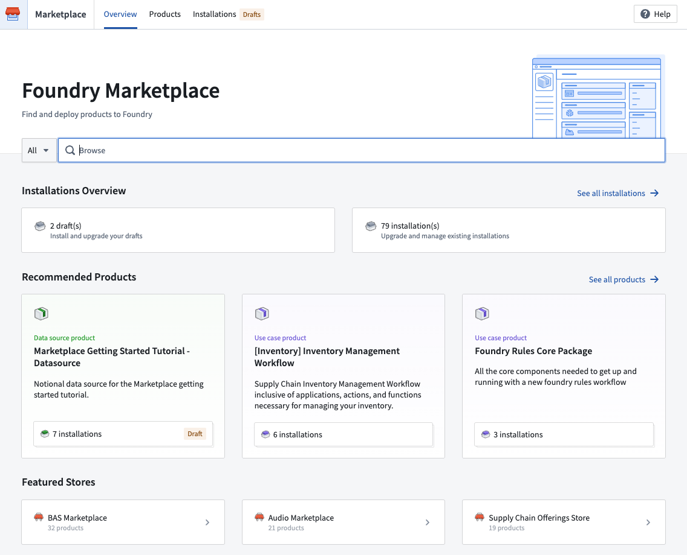

Product delivery
Foundry DevOps
Foundry DevOps enables you to rapidly develop and deploy packages of data-backed workflows built in Foundry, leveraging your organizationâs ontology, AI models, pipelines, data connections, or end-to-end use cases.
Key features of Foundry DevOps include:
- Flexible packaging of any combination of Foundry resources as a product.
- Automated version and dependency management to ensure seamless synchronization of modular components as products scale.
- Tagging of new product versions with release channels to ensure that they only reach qualifying installations.
- Management of a fleet of installations.
Foundry DevOps is a good fit for use cases such as:
- Product distribution: Publish your product for other installers within your organization or the broader Foundry community in the Foundry Marketplace.
- Building ecosystems: Install your product for each ecosystem participant (customers, subsidiaries, departments, and so on) with their input data.
- Release management: Create installations corresponding to development environments and customize maintenance windows for upgrades and release channels.
- Bootstrapping new use cases: Install your product once to serve as a starting point for your latest custom use case.
Learn how to create products and manage products.
Marketplace
The Marketplace storefront facilitates easy discoverability to install published data products.

Key features of Marketplace include:
- Guided product installation, including recommendations for related products that fulfill product inputs.
- Ability to enable automatic upgrades for installations to accept new product versions with no user intervention, including maintenance windows and release channels.
Learn how to browse and install Marketplace products.